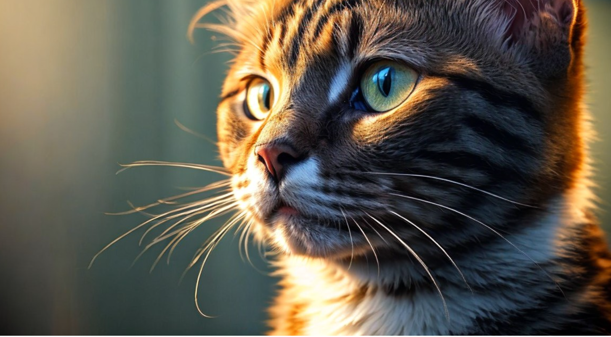
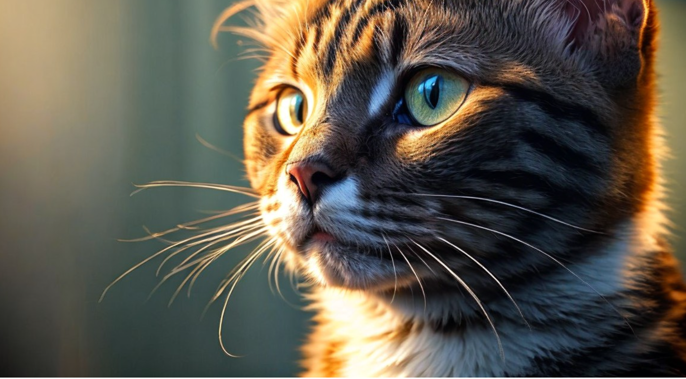

No cat should ever be hungry or thirsty. When you have an animal, you have to make sure that they have the appropriate resources to keep them happy and healthy.
They should have ready access to fresh water and be fed good quality cat food.
Your cat should be free to express normal feline
behaviors in their own home. For example cats need to be provided with suitable scratching posts, vertical spaces that they can climb on and opportunities for play so they have an outlet for their normal ‘hunting’ behaviors of stalk, pounce and attack!
Your cat should never be hurt, especially at the hands of you. It is imperative to always ensure that your cat is well cared for, and never in pain. If they show any signs of pain or illness they need to be taken to the vet as soon as possible for rapid diagnosis and treatment.
Click this link for further information on how to take of a cat.
Your cat should be free to express normal feline
behaviors in their own home. For example cats need to be provided with suitable scratching posts, vertical spaces that they can climb on and opportunities for play so they have an outlet for their normal ‘hunting’ behaviors of stalk, pounce and attack!
Your cat should never be hurt, especially at the hands of you. It is imperative to always ensure that your cat is well cared for, and never in pain. If they show any signs of pain or illness they need to be taken to the vet as soon as possible for rapid diagnosis and treatment.
Click this link for further information on how to take of a cat.